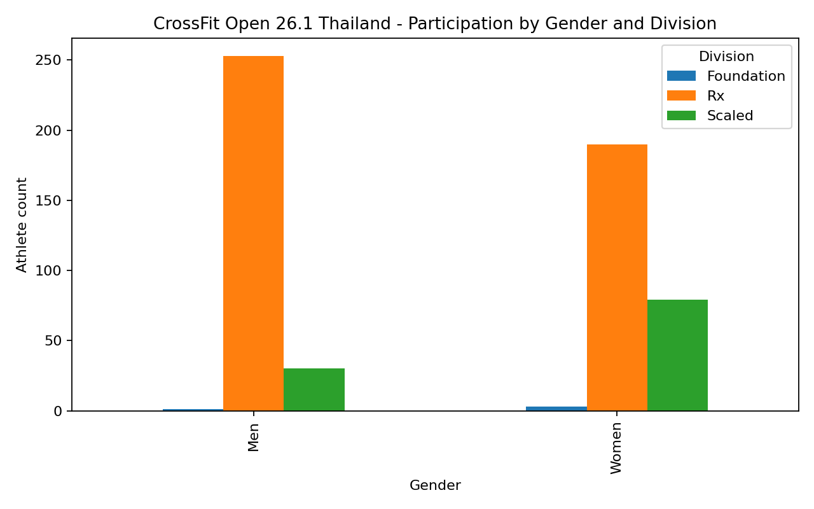
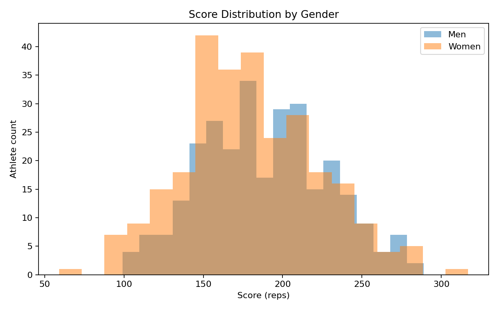
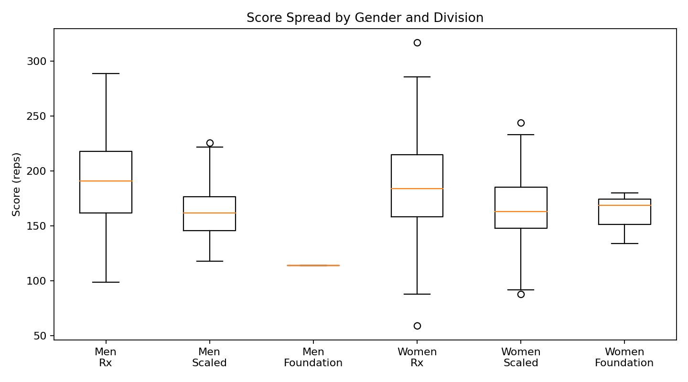
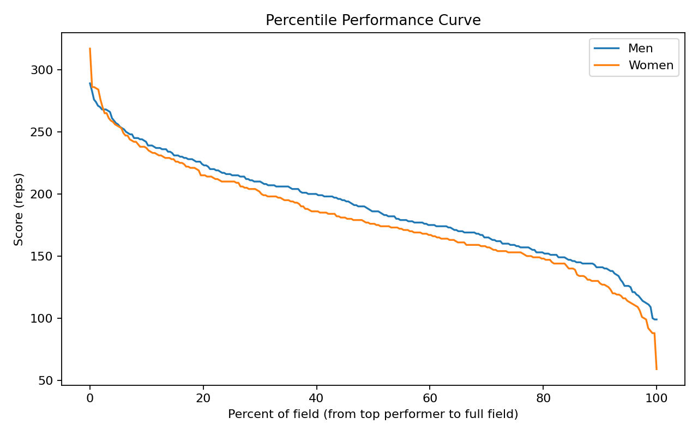

Score Distribution by Gender
Useful for seeing where most athletes cluster and whether one side of the field has a wider spread.

A premium, lightweight landing page built from the Thailand 26.1 leaderboard dataset. This version focuses on clean visual storytelling: participation structure, score distribution, and competitive benchmarking from the available score-and-rank export.
These charts show how scores are spread across the field and how performance variation changes by gender and division.
Useful for seeing where most athletes cluster and whether one side of the field has a wider spread.

Box plots highlight median performance and dispersion across the most relevant competitive groups.

This is the most actionable part of the dashboard for athletes and coaches: percentile targets and leaderboard shape.
Shows what score ranges are associated with stronger percentile bands like top 10%, top 25%, and median.

Reveals how sharply scores drop as rank increases, making it easier to see top-end compression or separation.

These are descriptive insights from the available leaderboard export only. They are useful for presentation, not causal inference.
Most entries are concentrated in Rx, making it the clearest lens for comparing competitive depth in this file.
The men and women fields are close in total size, which supports clean side-by-side comparison.
For athletes, percentile targets communicate standing much better than mean score alone.
Affiliate, age, region, and athlete-level storytelling would require richer metadata than this export contains.